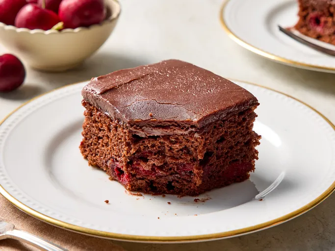

Chocolate Cake
Back to Home

Decadent Chocolate Cake
This chocolate cake is a rich and moist dessert that's perfect for any occasion. With its deep chocolate flavor and tender crumb, it's sure to be a hit with everyone!
Ingredients:
- 2 cups all-purpose flour
- 1 cup granulated sugar
- 3/4 cup cocoa powder
- 1 teaspoon baking soda
- 1/2 teaspoon baking powder
- 1/2 teaspoon salt
- 1 cup buttermilk
- 1 cup vegetable oil
- 2 large eggs
- 2 teaspoons vanilla extract
- 1 cup hot water
Instructions:
- Preheat the oven to 350°F (175°C).
- In a large bowl, whisk together the flour, sugar, cocoa powder, baking soda, baking powder, and salt.
- In another bowl, combine the buttermilk, vegetable oil, eggs, and vanilla extract.
- Pour the wet ingredients into the dry ingredients and mix until just combined.
- Gradually add the hot water to the batter, mixing until smooth. The batter will be thin.
- Pour the batter into a greased and floured 9x13 inch baking pan.
- Bake for 30-35 minutes, or until a toothpick inserted into the center comes out clean.
- Allow the cake to cool in the pan for 10 minutes, then turn it out onto a wire rack to cool completely